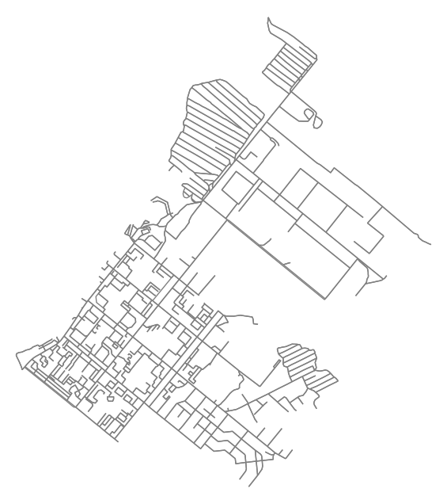
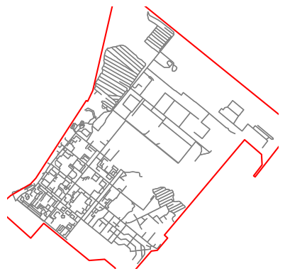
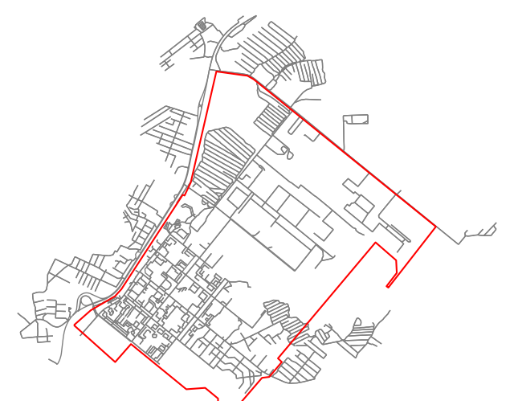
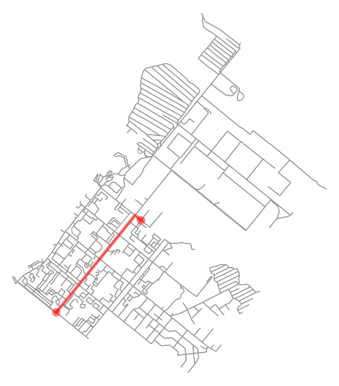
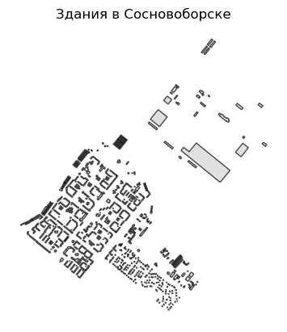
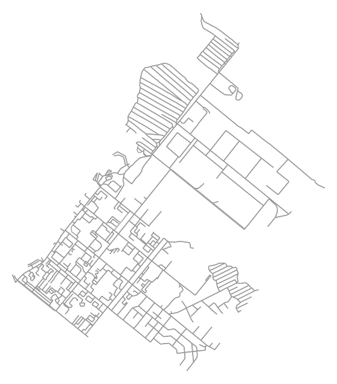

OSMNx — это библиотека на языке Python, предназначенная для загрузки, анализа и визуализации графов улично-дорожных сетей из проекта OpenStreetMap (OSM). Помимо графов улично-дорожных сетей позволяет работать со зданиями, границами районов и другими пространственными объектами.
🔹 Основные возможности:
Возможность
Описание
🗺️ Загрузка графов улиц
Можно загрузить дорожную сеть любого города или района
🧭 Поддержка разных типов дорог
Автомобильные, пешеходные, велосипедные и другие сети
🏙️ Работа с объектами
Загрузка зданий, границ населенных пунктов, водоёмов и других объектов
📐 Анализ графов
Поиск кратчайших путей, расчёт плотности сети, анализ топологии
🎨 Визуализация
Отрисовка карт и маршрутов с помощью Matplotlib
🌐 Интеграция с другими библиотеками
Совместимость с NetworkX, GeoPandas, Folium, Contextily и др.
💾 Сохранение данных
Графы можно сохранить в форматах: GraphML, Shapefile, GeoJSON
🔹 Примеры использования:
Загрузка и анализ улично-дорожных сетей
Анализ ориентации улиц населенных пунктов
Расчёт маршрутов между точками
Исследование доступности общественного транспорта
Образование и научные исследования в области геоинформатики
Создание прототипов приложений для навигации и логистики
🔹 Основные функции:
Функция
Назначение
ox.graph_from_place()
Загружает граф улиц по названию места
ox.graph_from_bbox()
Загружает граф по координатам прямоугольной области
pip install osmnx или conda install -c conda-forge osmnx
Зависимости
NetworkX, GeoPandas, Matplotlib, Requests и др.
3.2 Основные примеры использования библиотеки osmnx
Рекомендуемая версия osmnx для использования примеров: 2.0.1.
Загрузка графа дорог по названию города
import matplotlib.pyplot as pltimport osmnx as oxprint('Версия osmnx:', ox.__version__)# Разрешаем выгружать данные частных дорогox.settings.default_access =''# Загружаем дорожный граф по названию населенного пунктаG = ox.graph_from_place("Сосновоборск, Красноярский край, Россия", network_type="drive_service")# Визуализируем графfig, ax = ox.plot_graph(G, node_size=0, edge_color='gray', bgcolor='white')
Версия osmnx: 2.0.1

Уведомление
По умолчанию osmnx фильтрует дороги с пометкой private (частные). Для подразделений пожарной охраны это несущественно, т.к. они могут следовать в том числе и по частной территории. Поэтому при выгрузке ГДС рекомендуется использовать код:
# Используем ранее загруженный полигон для фильтрации графаG = ox.graph_from_polygon(boundary.union_all(), network_type="drive_service", retain_all=True)# Визуализируемax = boundary.boundary.plot(color='r')ox.plot_graph(G, ax=ax, node_size=0, edge_color='grey', bgcolor='white')plt.show()

Загрузка графа дорог в пределах полигона с буфером 1000 м
# Создаем буфер вокруг полигона (в метрах)buffered_polygon = ox.projection.project_gdf(boundary).copy()buffered_polygon.geometry = buffered_polygon.geometry.buffer(1000)buffered_polygon = ox.projection.project_gdf(buffered_polygon, to_latlong=True)# Загружаем граф с учетом буфераG = ox.graph_from_polygon(buffered_polygon.union_all(), network_type="drive_service")# Рисуем результатfig, ax = ox.plot_graph(G, node_size=0, edge_color='grey', bgcolor='white', close=False, show=False)boundary.boundary.plot(color='r', ax=ax)plt.show()

Упрощение ГДС
Упрощение графа заключается в удалении промежуточных узлов, не влияющих на результаты расчета. Это позволяет существенно (до 4 раз сократить размер графа), что в свою очередь положительно сказывается на скорости моделирования.
Функции выгрузки графа, такие как ox.graph_from_polygon по умолчанию выгружают ГДС упрощенный граф. Установка аргумента simplify=False позволяет выгрузить неупрощенный граф:
G = ox.graph_from_place("Сосновоборск, Красноярский край, Россия",
network_type="drive_service",
simplify=False)
Установку скоростного режима рекомендуется выполнять применительно к неупрощенному ГДС, после чего можно выполнить процедуру упрощения:
G = ox.simplification.simplify_graph(G)
G = ox.graph_from_place("Сосновоборск, Красноярский край, Россия", network_type="drive_service", simplify=False)print('Неупрощенный граф: Количество узлов:', len(G.nodes()), 'Количество ребер:', len(G.edges()))G = ox.simplification.simplify_graph(G)print('Упрощенный граф: Количество узлов:', len(G.nodes()), 'Количество ребер:', len(G.edges()))
Неупрощенный граф: Количество узлов: 1904 Количество ребер: 4167
Упрощенный граф: Количество узлов: 651 Количество ребер: 1688
Установка скоростей следования для дорог
# Загрузка графа. Для наглядности граф не упрощается.G = ox.graph_from_place("Сосновоборск, Красноярский край, Россия", network_type="drive_service", simplify=False)# Добавляем скорость к каждому ребру графаG = ox.add_edge_speeds(G)# Теперь можно рассчитать время проездаG = ox.add_edge_travel_times(G)# Оцениваем присвоенные параметрыg_edges = ox.graph_to_gdfs(G, nodes=False)print(g_edges.groupby('highway')[['speed_kph', 'travel_time']].mean())g_edges[['highway', 'speed_kph', 'length', 'travel_time']].head()
travel_time - Время следования по участку дороги, сек
length - Длина участка дороги, м
Важное уведомление
Встроенная функция osmnx.add_edge_travel_times() рассчитывает для travel_time время следования в секундах!
Функционал же genesis использует время в минутах. Поэтому в расчетах с использованием genesis необходимо использовать функцию set_graph_travel_times модуля graphs.speeds. Подробнее об этом см. в соответствующем разделе руководства.
Расчёт кратчайшего маршрута и времени следования между точками
# Выберем два случайных узла из графаorigin, destination =list(G.nodes())[2], list(G.nodes())[10]# Найдём маршрут скорейший по времени прибытияroute = ox.shortest_path(G, origin, destination, weight='travel_time')# Печатаем время следования по маршрутуroute_gdf = ox.routing.route_to_gdf(G, route, weight='travel_time')print('Время следования:', route_gdf['travel_time'].sum(), 'сек.')print('Длина маршрута: ', route_gdf['length'].sum(), 'м')# Рисуем маршрут по длинеfig, ax = ox.plot_graph_route(G, route, node_size=0, bgcolor='white')
Время следования: 135.3555412018432 сек.
Длина маршрута: 1858.2466468504206 м

Загрузка данных о зданиях в пределах полигона границ населенного пункта
# Тег OSM для зданийtags = {'building': True}# Словарь полей, которые следует оставить в наборе. Если не использовать, будут сохранены излишние данныеfields = ['name','amenity','building','addr:street','addr:housenumber','building:levels','building:flats',# 'rooms','geometry',]# Загрузка набора данных из OSMbuildings = ox.features_from_polygon(boundary.union_all(), tags)# Оставляем только данные с геометрией Полигон или Мультиполигонbuildings = buildings[buildings.geometry.apply(lambda x: x.geom_type).isin(['Polygon', 'MultiPolygon'])]# Оставляем только заданные поляbuildings = buildings[fields]# Удаляем индекс по типу элементаbuildings = buildings.reset_index().drop('element', axis=1)# Устанавливаем индекс 'osmid'buildings = buildings.set_index('id')# Проверяем количество записей и полейprint('Набор зданий:', buildings.shape)# Рисуем зданияax = buildings.plot(edgecolor='black', facecolor='lightgray', alpha=0.7)ax.set_title("Здания в Сосновоборске")ax.set_axis_off()plt.show()
Набор зданий: (603, 8)

Сопоставление зданий с ближайшими вершинами графа дорожной сети
Данная операция необходима для расчета скорейшего маршрута между зданиями (по узлам ГДС)
Настоятельно рекомендуется проецировать наборы пространственных данных в единую систему координат (СК).
В osmnx для этой цели используются функции:
ox.projection.project_gdf - для проецирования наборов пространственных данных (GeoDataFrame)
ox.project_graph - для проецирования графов.
Более подробно о проецировании см. документацию: https://osmnx.readthedocs.io/en/stable/user-reference.html#module-osmnx.projection
Сохранение графа дорог в GraphML и GeoPackage
# Сохраняем в формате GraphMLox.save_graphml(G, filepath="data/graph_sosnovoborsk.ml")# Сохраняем в формате GeoPackageox.save_graph_geopackage(G, filepath="data/graph_sosnovoborsk.gpkg")
Загрузка графа дорог из GraphML
# Загружаем граф обратно из файлаG = ox.load_graphml(filepath="data/graph_sosnovoborsk.ml")# Рисуем загруженный графfig, ax = ox.plot_graph(G, node_size=0, bgcolor='white');

Сохранение полигона границ и данных о зданиях в файлы GeoPackage
Как правило для последующей работы требуется сохранять данные о зданиях и границах в формат пригодный для работы в приложении QGIS. Для этого можно использовать описанный код.
# Сохраняем границы в GeoPackageboundary.to_file("data/boundary_sosnovoborsk.gpkg", driver="GPKG")# Сохраняем здания в тот же или новый GeoPackagebuildings.to_file("data/buildings_sosnovoborsk.gpkg", driver="GPKG")